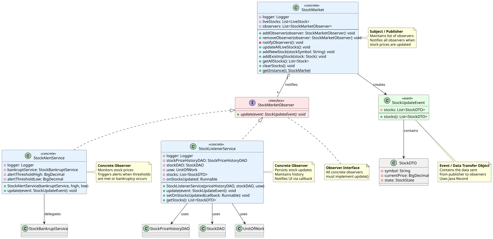

Hvilket problem løser dette?
- Tæt kobling
- Polling ("Er vi der snart?")

Software Design og Test
The Hollywood Principle (Publisher/Subscriber)

StockMarket-Subject: src/business/stockmarket/StockMarket.java
Observer: src/business/observer/StockMarketObserver.java
StockMarket-Subject og Observer
public class StockMarket {
// TÆT KOBLING: StockMarket kender specifikke services
private StockListenerService listener;
private StockAlertService alertService;
private StockBankruptService bankruptService;
private PortfolioQueryService portfolioService;
public void updateAllLiveStocks() {
for (LiveStock stock : liveStocks) {
stock.updatePrice();
// Nu skal StockMarket håndtere ALLE opdateringer selv!
listener.persistUpdate(stock);
alertService.checkThresholds(stock);
bankruptService.handleIfBankrupt(stock);
portfolioService.updateBalances(stock);
}
}
}
}Se: test/unit/business/stockmarket/StockMarketTest.java
The Lapsed Listener Problem